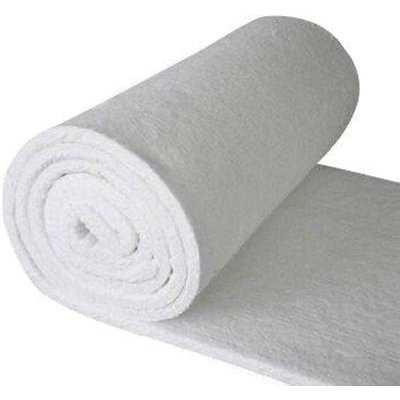

Eco-Friendly Fuel

Price: MYR 131.09 @ Amazon
About the product
- The ceramic wool will not burn, it remains in the burner.
- For all Ethanol, Gel, Electric, and Gas Fireplaces. Designed to fit small ethanol burners and tabletop ethanol fireplaces that have a capacity of up to a .8 liter burner
- Designed for ethanol tabletop, wall mounted, free standing, burners, mantel, fire pots, tiki torch, alcohol stoves, chafing cans for cooking, alcohol burners with pots
- Saves fuel an average of 35 percent fuel at low settings giving a more even and vibrant flame. Made Proudly in USA. Enhance the vibrancy of your flame while extending the life of the fire in your ventless bio ethanol fireplace by replacing and/or adding ceramic ethanol wool into your ethanol burner. By adding ceramic wool into your burner on average increases burn time by 35 percent which reduces the cost of bio ethanol fuel usage.
- 100% SATISFACTION GUARANTEED! Regal Flame produces quality fireplaces, fire pits, gas logs, firewood racks, covers, accessories and more, at affordable prices and is dedicated to address any product/service issues and is committed to delivering a 5 star experience for all buyers. Please remember not to ever pour/refill fuel onto open fire or when burner/fireplace is not cool to touch.